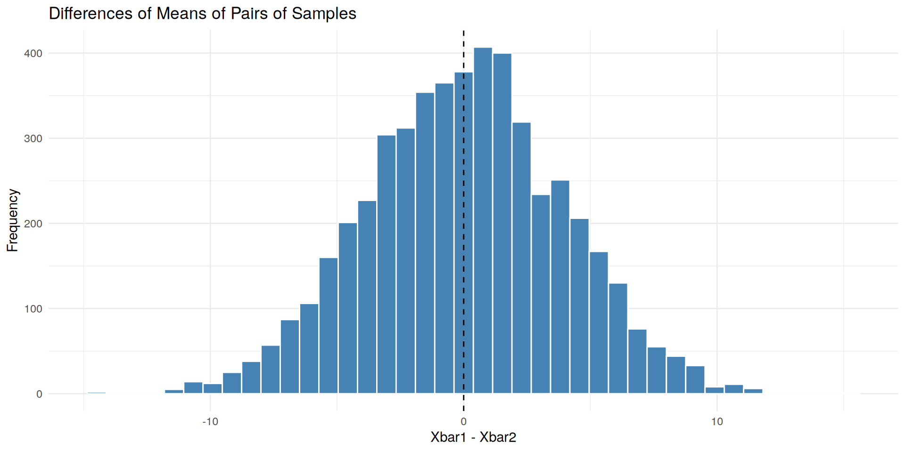
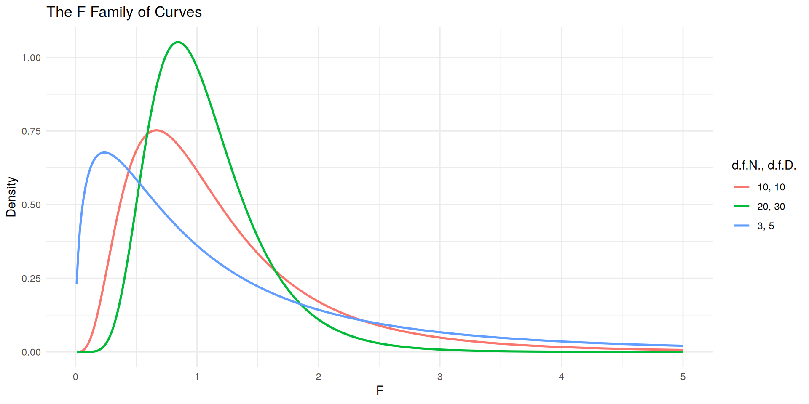

set.seed(2023)
mean_differences <- replicate(5000,
mean(rnorm(30, 100, 15)) - mean(rnorm(30, 100, 15)))
ggplot(data.frame(difference = mean_differences), aes(difference)) +
geom_histogram(bins = 40, fill = "steelblue", colour = "white") +
geom_vline(xintercept = 0, linetype = "dashed") +
labs(title = "Differences of Means of Pairs of Samples",
x = "Xbar1 - Xbar2", y = "Frequency") +
theme_minimal()Statistics
Chapter 9: Testing the Difference Between Two Means, Two Proportions, and Two Variances
Yu-You Liou
Shih Chien University
2026-09-20
Overview
Chapter 9 extends hypothesis testing from one parameter to the comparison of two parameters — two means, two proportions, or two variances — using the same five-step procedure introduced in Chapter 8.
| Section | Topics |
|---|---|
| 9-1 | Two-parameter comparisons; independent vs. dependent samples; distribution of \bar{X}_1 - \bar{X}_2 |
| 9-2 | z test for two means (\sigma known); testing a specific difference; z CI for \mu_1 - \mu_2 |
| 9-3 | t test, independent samples (\sigma unknown); d.f. rule; pooled variance; t CI |
Overview (continued)
| Section | Topics |
|---|---|
| 9-4 | Dependent (matched-pair) samples; t test on \bar{D}, s_D; procedure table; CI for \mu_D |
| 9-5 | z test for two proportions; weighted \bar{p}, \bar{q}; CI for p_1 - p_2 |
| 9-6 | F distribution; F test for two variances; d.f.N., d.f.D.; cautions |
Chapter Objectives
After completing this chapter, you should be able to
- Test the difference between two means, using the z test.
- Test the difference between two means for independent samples, using the t test.
- Test the difference between two means for dependent samples.
- Test the difference between two proportions.
- Test the difference between two variances or standard deviations.
Section 9-1: Testing the Difference Between Two Parameters
Comparing Two Groups
In Chapter 8 a single sample mean, variance, or proportion was compared with a specific population value. Researchers, however, often want to compare two groups — an experimental group and a control group, two brands of bus tires, two fertilizers, two brands of cough syrup.
Suppose a researcher asks: Does the mean age of nursing students who enroll at a community college differ from the mean age of nursing students who enroll at a university? The researcher is not interested in the mean age of all beginning nursing students; the interest is in comparing the means of the two groups.
Two Equivalent Ways of Stating the Hypotheses
H_0:\ \mu_1 = \mu_2 \qquad H_1:\ \mu_1 \neq \mu_2
or, equivalently,
H_0:\ \mu_1 - \mu_2 = 0 \qquad H_1:\ \mu_1 - \mu_2 \neq 0
If there is no difference in the population means, subtracting them gives zero; if they differ, subtracting gives a number other than zero. Both statements are correct; this text uses the first form when the hypothesized difference is zero.
Hypotheses for Means and for Proportions
The same reasoning applies to proportions. If a researcher believes the percentage of male workers who work more than 5 days a week differs from the percentage of female workers who do, the hypotheses are H_0:\ p_1 = p_2 and H_1:\ p_1 \neq p_2 (or H_0:\ p_1 - p_2 = 0 and H_1:\ p_1 - p_2 \neq 0).
Two-Tailed, Right-Tailed, and Left-Tailed Forms
| Test | Means | Proportions |
|---|---|---|
| Two-tailed | H_0:\ \mu_1 = \mu_2; H_1:\ \mu_1 \neq \mu_2 | H_0:\ p_1 = p_2; H_1:\ p_1 \neq p_2 |
| Right-tailed | H_0:\ \mu_1 = \mu_2; H_1:\ \mu_1 > \mu_2 | H_0:\ p_1 = p_2; H_1:\ p_1 > p_2 |
| Left-tailed | H_0:\ \mu_1 = \mu_2; H_1:\ \mu_1 < \mu_2 | H_0:\ p_1 = p_2; H_1:\ p_1 < p_2 |
Independent and Dependent Samples
Independent Samples
Two samples are independent when the subjects selected for the first sample in no way influence the way the subjects are selected for the second sample.
Example: 50 people are randomly divided into two groups of 25 to test a new drug; one group receives the drug and the other a placebo.
Dependent Samples
Two samples are dependent when the selection of subjects for the first group in some way influences the selection of subjects for the other group.
Example: to see whether a person’s right foot is slightly larger than the left, once a person’s right foot is selected for sample 1, that same person’s left foot must be selected for sample 2.
The Distribution of the Differences of Means
The theory behind testing the difference between two means is based on selecting pairs of samples and comparing the means of the pairs. The population means need not be known.
All possible pairs of samples are taken from the populations; the means of each pair are computed and subtracted, and the differences are plotted. If both populations have the same mean, most differences will be zero or close to zero, with a few large differences — some positive, some negative — due to chance alone. The resulting curve is shaped like a normal distribution with a mean of zero (Figure 9-1).
General Formula for the Test Statistic
\text{Test statistic} = \frac{(\text{observed value}) - (\text{expected value})}{\text{standard error}}
Every test in this chapter — for two means, two proportions, and (in a different form) two variances — is a special case of this format.
Distribution of Differences of Means in R
Draw figure — a simulation of Figure 9-1: repeatedly draw two samples from populations with the same mean and plot \bar{X}_1 - \bar{X}_2.

The differences centre on zero: when \mu_1 = \mu_2, a difference far from zero is unlikely by chance alone, and that is what makes the test work.
Section 9-2: Testing the Difference Between Two Means: Using the z Test
Assumptions for the z Test
Assumptions for the z Test to Determine the Difference Between Two Means
- Both samples are random samples.
- The samples must be independent of each other — there can be no relationship between the subjects in each sample.
- The standard deviations of both populations must be known; and if the sample sizes are less than 30, the populations must be normally or approximately normally distributed.
In this book the assumptions are stated in the exercises; in other situations you must check that they have been met before proceeding.
Formula for the z Test for Two Means
z Test for Comparing Two Means from Independent Populations
z = \frac{(\bar{X}_1 - \bar{X}_2) - (\mu_1 - \mu_2)}{\sqrt{\dfrac{\sigma_1^2}{n_1} + \dfrac{\sigma_2^2}{n_2}}}
The denominator is the standard error of the difference, because the variance of \bar{X}_1 - \bar{X}_2 is the sum of the individual variances:
\sigma^2_{\bar{X}_1 - \bar{X}_2} = \sigma^2_{\bar{X}_1} + \sigma^2_{\bar{X}_2} = \frac{\sigma_1^2}{n_1} + \frac{\sigma_2^2}{n_2}
Here \bar{X}_1 - \bar{X}_2 is the observed value and \mu_1 - \mu_2 is the expected value, which equals zero when H_0:\ \mu_1 = \mu_2.
The Two Testing Procedures
Traditional Method
| Step | Action |
|---|---|
| 1 | State the hypotheses and identify the claim. |
| 2 | Find the critical value(s). |
| 3 | Compute the test statistic. |
| 4 | Make the decision. |
| 5 | Summarize the results. |
P-Value Method
| Step | Action |
|---|---|
| 1 | State the hypotheses and identify the claim. |
| 2 | Compute the test statistic. |
| 3 | Find the P-value. |
| 4 | Make the decision. |
| 5 | Summarize the results. |
The critical values are the same ones used in Section 8-2.
Example 9-1
Average Order Value by Channel
An e-commerce platform in Taipei compares the average order value of purchases placed through its mobile app with purchases placed through its website. Random samples of 40 app orders and 40 website orders gave mean order values of NT$1685 and NT$1512. From several years of transaction records the population standard deviations are taken to be NT$320 for app orders and NT$285 for website orders. At \alpha = 0.05, can it be concluded that there is a significant difference in the mean order value of the two channels? (hypothetical data)
App Website
Sample mean 1685 1512
sigma 320 285
n 40 40Back to Example 9-3
Example 9-1
Solution
Step 1. State the hypotheses and identify the claim.
H_0:\ \mu_1 = \mu_2 \qquad H_1:\ \mu_1 \neq \mu_2 \ \textit{(claim)}
Step 2. Find the critical values. Since \alpha = 0.05 and the test is two-tailed, the critical values are -1.96 and +1.96.
Step 3. Compute the test statistic.
z = \frac{(1685 - 1512) - 0}{\sqrt{\dfrac{320^2}{40} + \dfrac{285^2}{40}}} = \frac{173}{67.75} = 2.55
Example 9-1
Solution
Step 3 in R — critical values, test statistic, and P-value.
standard_error z
67.75 2.55 [1] -1.96 1.96[1] 0.0107Step 4. Make the decision. Reject H_0, since 2.55 > 1.96 (equivalently P = 0.0107 < \alpha = 0.05).
Step 5. There is enough evidence to say that the mean order value differs between the app channel and the website channel at the 0.05 significance level.
Example 9-2
Order Lines Picked per Order
A logistics company hypothesizes that the average number of order lines picked per order is greater at its Taoyuan distribution centre than at its Taichung distribution centre. A random sample of 50 orders from each centre is shown. At \alpha = 0.10, is there enough evidence to support the claim? Assume \sigma_1 and \sigma_2 = 4. Use the P-value method. (hypothetical data)
Taoyuan Taichung
14 6 16 7 18 13 10 16 10 10
10 13 14 7 11 9 13 8 9 16
18 10 15 16 11 11 17 12 8 14
15 5 7 11 15 8 16 5 8 6
6 15 16 13 9 8 13 7 16 14
14 15 14 7 19 12 12 18 14 18
16 6 10 6 17 16 15 12 7 11
14 13 11 22 19 20 7 9 14 8
8 13 11 15 13 11 11 16 15 15
10 14 11 10 14 13 12 15 7 5Example 9-2
Solution
Step 1. State the hypotheses and identify the claim.
H_0:\ \mu_1 = \mu_2 \qquad H_1:\ \mu_1 > \mu_2 \ \textit{(claim)}
Step 2 — compute the test statistic. First find the mean of each data set.
taoyuan <- c(14, 6, 16, 7, 18, 10, 13, 14, 7, 11,
18, 10, 15, 16, 11, 15, 5, 7, 11, 15,
6, 15, 16, 13, 9, 14, 15, 14, 7, 19,
16, 6, 10, 6, 17, 14, 13, 11, 22, 19,
8, 13, 11, 15, 13, 10, 14, 11, 10, 14)
taichung <- c(13, 10, 16, 10, 10, 9, 13, 8, 9, 16,
11, 17, 12, 8, 14, 8, 16, 5, 8, 6,
8, 13, 7, 16, 14, 12, 12, 18, 14, 18,
16, 15, 12, 7, 11, 20, 7, 9, 14, 8,
11, 11, 16, 15, 15, 13, 12, 15, 7, 5)
round(c(n_taoyuan = length(taoyuan), n_taichung = length(taichung),
mean_taoyuan = mean(taoyuan), mean_taichung = mean(taichung)), 1) n_taoyuan n_taichung mean_taoyuan mean_taichung
50.0 50.0 12.4 11.8 Example 9-2
Solution
Step 2 (continued). With \bar{X}_1 = 12.4, \bar{X}_2 = 11.8 and \sigma_1 = \sigma_2 = 4,
z = \frac{(12.4 - 11.8) - 0}{\sqrt{\dfrac{4^2}{50} + \dfrac{4^2}{50}}} = 0.75
z p_value
0.7500 0.2266 Step 3. Find the P-value. For z = 0.75 the area to the left is 0.7734, and 1.0000 - 0.7734 = 0.2266.
Step 4. Since the P-value is larger than \alpha (0.2266 > 0.10), do not reject H_0.
Step 5. There is not enough evidence to support the claim that the Taoyuan centre picks more order lines per order than the Taichung centre at the 0.10 level of significance.
Testing a Specific Difference
Sometimes the researcher tests a difference in means other than zero. For example, a researcher might hypothesize that nursing students at a community college are on average 3.2 years older than those at a university:
H_0:\ \mu_1 - \mu_2 = 3.2 \qquad H_1:\ \mu_1 - \mu_2 > 3.2
Hypothesized Difference
The formula for the z test is unchanged; the term \mu_1 - \mu_2 in the numerator is the hypothesized difference, or expected value. In this case \mu_1 - \mu_2 = 3.2 is substituted instead of 0.
Confidence Interval for \mu_1 - \mu_2 (\sigma_1 and \sigma_2 Known)
z Confidence Interval for the Difference Between Two Means
(\bar{X}_1 - \bar{X}_2) - z_{\alpha/2}\sqrt{\frac{\sigma_1^2}{n_1}+\frac{\sigma_2^2}{n_2}} < \mu_1-\mu_2 < (\bar{X}_1 - \bar{X}_2) + z_{\alpha/2}\sqrt{\frac{\sigma_1^2}{n_1}+\frac{\sigma_2^2}{n_2}}
When the hypothesized difference is zero: if the confidence interval contains zero, H_0 is not rejected; if it does not contain zero, H_0 is rejected.
Example 9-3
Average Order Value by Channel
Find the 95% confidence interval for the difference between the means in Example 9-1.
Example 9-3
Solution
Substitute in the formula, using z_{\alpha/2} = 1.96.
(1685 - 1512) \pm 1.96\sqrt{\dfrac{320^2}{40} + \dfrac{285^2}{40}} = 173 \pm 132.80
40.20 < \mu_1 - \mu_2 < 305.80
lower upper
40.2 305.8 Since the confidence interval does not contain zero, the decision is to reject H_0, which agrees with Example 9-1.
Section 9-3: Testing the Difference Between Two Means (Independent Samples)
When the Population Standard Deviations Are Unknown
In Section 9-2 the z test was used when the population standard deviations were known. In many situations that condition cannot be met. In those cases a t test is used to test the difference between means when the two samples are independent and are taken from two normally or approximately normally distributed populations.
Independent Samples
Samples are independent samples when they are not related. Throughout this section it is also assumed that the variances are not equal.
Formula for the t Test (Independent Samples)
t Test for the Difference Between Two Means, Independent Samples
Variances are assumed to be unequal:
t = \frac{(\bar{X}_1 - \bar{X}_2) - (\mu_1 - \mu_2)}{\sqrt{\dfrac{s_1^2}{n_1} + \dfrac{s_2^2}{n_2}}}
where the degrees of freedom are equal to the smaller of n_1 - 1 or n_2 - 1.
The denominator is the standard error of the difference between two means; s_1 and s_2 replace the unknown \sigma_1 and \sigma_2.
Assumptions for the t Test
Assumptions for the t Test for Two Independent Means When \sigma_1 and \sigma_2 Are Unknown
- The samples are random samples.
- The sample data are independent of one another.
- When the sample sizes are less than 30, the populations must be normally or approximately normally distributed.
The hypothesis test follows the same five steps as in Section 9-2; the formula uses s_1 and s_2, and the critical values come from the t distribution.
Example 9-4
Monthly Revenue by Store Format
A coffee chain wants to know whether mean monthly revenue differs between its street-level stores and its shopping-mall counters. Random samples of 10 stores of each format were selected. The street-level stores averaged NT$854 thousand per month and the mall counters averaged NT$814 thousand. The standard deviations of the samples were NT$52 thousand and NT$61 thousand, respectively. At \alpha = 0.05, can it be concluded that there is a difference in the means of the two samples? Assume the variables are normally distributed. (hypothetical data)
Street-level Mall counter
Sample mean 854 814
s 52 61
n 10 10Back to Example 9-5
Example 9-4
Solution
Step 1. State the hypotheses and identify the claim.
H_0:\ \mu_1 = \mu_2 \qquad H_1:\ \mu_1 \neq \mu_2 \ \textit{(claim)}
Step 2. Find the critical values. The test is two-tailed with \alpha = 0.05. The degrees of freedom are the smaller of n_1 - 1 and n_2 - 1; here both equal 10 - 1 = 9, so the critical values are +2.262 and -2.262.
Step 3. Find the test statistic.
t = \frac{(854 - 814) - 0}{\sqrt{\dfrac{52^2}{10} + \dfrac{61^2}{10}}} = \frac{40}{25.348} = 1.578
Example 9-4
Solution
Step 3 in R — degrees of freedom, critical values, test statistic, and P-value.
mean_street <- 854; sd_street <- 52; n_street <- 10
mean_mall <- 814; sd_mall <- 61; n_mall <- 10
degrees_freedom <- min(n_street - 1, n_mall - 1)
se_revenue <- sqrt(sd_street^2 / n_street + sd_mall^2 / n_mall)
t_statistic <- (mean_street - mean_mall) / se_revenue
round(c(df = degrees_freedom, standard_error = se_revenue,
t = t_statistic), 3) df standard_error t
9.000 25.348 1.578 [1] -2.262 2.262[1] 0.149Step 4. Do not reject H_0, since 1.578 < 2.262.
Step 5. There is not enough evidence to support the claim that the means are different.
Confidence Interval for \mu_1 - \mu_2 (\sigma_1 and \sigma_2 Unknown)
Confidence Interval for the Difference of Two Means: Independent Samples
Variances assumed to be unequal:
(\bar{X}_1 - \bar{X}_2) - t_{\alpha/2}\sqrt{\frac{s_1^2}{n_1}+\frac{s_2^2}{n_2}} < \mu_1-\mu_2 < (\bar{X}_1 - \bar{X}_2) + t_{\alpha/2}\sqrt{\frac{s_1^2}{n_1}+\frac{s_2^2}{n_2}}
with \text{d.f.} = the smaller value of n_1 - 1 or n_2 - 1.
Example 9-5
Monthly Revenue by Store Format
Find the 95% confidence interval for the data in Example 9-4.
Example 9-5
Solution
Substitute in the formula, using t_{\alpha/2} = 2.262 with \text{d.f.} = 9.
(854 - 814) \pm 2.262\sqrt{\dfrac{52^2}{10} + \dfrac{61^2}{10}} = 40 \pm 57.34
-17.34 < \mu_1 - \mu_2 < 97.34
lower upper
-17.34 97.34 Since 0 is contained in the interval, there is not enough evidence to support the claim that the means are different.
Degrees of Freedom in Software
The Welch Degrees of Freedom
Many statistical software packages compute the degrees of freedom for this t test from
\text{d.f.} = \frac{\left(\dfrac{s_1^2}{n_1} + \dfrac{s_2^2}{n_2}\right)^2}{\dfrac{(s_1^2/n_1)^2}{n_1 - 1} + \dfrac{(s_2^2/n_2)^2}{n_2 - 1}}
This formula is not used in this textbook. The textbook always uses the smaller of n_1 - 1 and n_2 - 1, which is the more conservative choice.
The Pooled Estimate of the Variance
t Test When the Variances Are Assumed Equal
t = \frac{(\bar{X}_1 - \bar{X}_2) - (\mu_1 - \mu_2)}{\sqrt{\dfrac{(n_1-1)s_1^2 + (n_2-1)s_2^2}{n_1 + n_2 - 2}}\sqrt{\dfrac{1}{n_1}+\dfrac{1}{n_2}}}\qquad \text{d.f.} = n_1 + n_2 - 2
Pooled Estimate of the Variance
A pooled estimate of the variance is a weighted average of the variance using the two sample variances and the degrees of freedom of each variance as the weights.
Choosing Between the Two t Tests
Caution
There are two options for the t test: one for unequal population variances and one for equal variances. To decide whether two sample variances are equal, a researcher can use an F test (Section 9-6).
However, not all statisticians agree on using the F test before the t test: conducting the F and t tests at the same level of significance changes the overall level of significance of the t test. Because of this, this text assumes \sigma_1 \neq \sigma_2 throughout.
The Two-Sample t Test in R
Compare the textbook’s conservative d.f. with the Welch d.f. used by t.test(), starting from the Example 9-4 summaries.
df_book df_welch
9.00 17.56 p_book p_welch
0.1490 0.1324 The test statistic is the same either way; only the degrees of freedom, and therefore the P-value, differ. The textbook always uses \text{d.f.} = 9, the more conservative choice.
Section 9-4: Testing the Difference Between Two Means: Dependent Samples
Dependent Samples
Dependent Samples
Samples are considered to be dependent samples when the subjects are paired or matched in some way. Dependent samples are sometimes called matched-pair samples.
Examples: a pretest and a posttest on the same subjects before and after taking a drug; SAT scores before and after a preparation course; preweights and postweights in a counseling program. Students can also be matched on a pertinent variable — such as IQ — with one of each pair assigned to each group. Matching helps reduce type II error by eliminating extraneous variables.
Two Cautions About Matching
Caution
- When subjects are matched according to one variable, the matching process does not eliminate the influence of other variables. Matching students on IQ does not account for their mathematical ability or their familiarity with computers.
- When the same subjects are used in a pre-post study, the knowledge that they are participating in a study can itself influence the results — people placed in a special program may be more highly motivated simply because they were selected.
Hypotheses for Dependent Samples
Hypotheses Using \mu_D
| Two-tailed | Left-tailed | Right-tailed |
|---|---|---|
| H_0:\ \mu_D = 0 | H_0:\ \mu_D = 0 | H_0:\ \mu_D = 0 |
| H_1:\ \mu_D \neq 0 | H_1:\ \mu_D < 0 | H_1:\ \mu_D > 0 |
Here \mu_D is the expected mean of the difference of the matched pairs, and D = X_1 - X_2.
Assumptions and Formulas
Assumptions for the t Test for Two Means When the Samples Are Dependent
- The sample or samples are random.
- The sample data are dependent.
- When the sample size or sample sizes are less than 30, the population or populations must be normally or approximately normally distributed.
Formulas for the t Test for Dependent Samples
t = \frac{\bar{D} - \mu_D}{s_D/\sqrt{n}} \qquad \text{d.f.} = n - 1
\bar{D} = \frac{\sum D}{n} \qquad s_D = \sqrt{\frac{n\sum D^2 - \left(\sum D\right)^2}{n(n-1)}}
Procedure Table
Testing the Difference Between Means for Dependent Samples
| Step | Action |
|---|---|
| 1 | State the hypotheses and identify the claim. |
| 2 | Find the critical value(s). |
| 3 | Compute the test statistic (a–f below). |
| 4 | Make the decision. |
| 5 | Summarize the results. |
Step 3 in detail. (a) Make a table with columns X_1, X_2, A = D = X_1 - X_2, and B = D^2 = (X_1 - X_2)^2. (b) Find the differences and place them in column A. (c) Find the mean of the differences, \bar{D} = \sum D / n. (d) Square the differences and place them in column B. (e) Find s_D. (f) Find the test statistic t = (\bar{D} - \mu_D)/(s_D/\sqrt{n}) with \text{d.f.} = n - 1.
Example 9-6
Outlet Revenue Three Years Apart
A random sample of nine outlets of a bubble-tea chain shows their average monthly revenue (in NT$ millions) 3 years ago and their average monthly revenue today. At \alpha = 0.05, can it be concluded that the average monthly revenue of the outlets is greater today than it was 3 years ago? Assume the variable is normally distributed. (hypothetical data)
Outlet 1 2 3 4 5 6 7 8 9
3 years ago 7.00 3.40 3.90 3.50 4.00 3.30 4.00 5.30 3.90
Today 5.20 3.80 6.40 2.90 7.10 4.50 8.20 3.30 6.80Example 9-6
Solution
Step 1. State the hypotheses and identify the claim. If revenue has increased, the revenue 3 years ago must be significantly less than the revenue today, so the mean of the differences must be less than zero.
H_0:\ \mu_D = 0 \qquad H_1:\ \mu_D < 0 \ \textit{(claim)}
Step 2. Find the critical value. The degrees of freedom are n - 1 = 9 - 1 = 8; for a left-tailed test with \alpha = 0.05 the critical value is -1.860.
Step 3. Compute the test statistic. With \sum D = -9.90 and \sum D^2 = 51.11,
\bar{D} = \frac{-9.90}{9} = -1.100 \qquad s_D = \sqrt{\frac{9(51.11) - (-9.90)^2}{9(8)}} = 2.242
t = \frac{-1.100 - 0}{2.242/\sqrt{9}} = -1.472
Example 9-6
Solution - Step 3 in R
| X1 | X2 | D | D2 |
|---|---|---|---|
| 7.0 | 5.2 | 1.8 | 3.24 |
| 3.4 | 3.8 | -0.4 | 0.16 |
| 3.9 | 6.4 | -2.5 | 6.25 |
| 3.5 | 2.9 | 0.6 | 0.36 |
| 4.0 | 7.1 | -3.1 | 9.61 |
| 3.3 | 4.5 | -1.2 | 1.44 |
| 4.0 | 8.2 | -4.2 | 17.64 |
| 5.3 | 3.3 | 2.0 | 4.00 |
| 3.9 | 6.8 | -2.9 | 8.41 |
sumD sumD2
-9.90 51.11 Example 9-6
Solution
Steps 3-5 in R — test statistic, critical value, P-value, and decision.
Dbar sD t
-1.100 2.242 -1.472 [1] -1.86[1] 0.0896Step 4. Do not reject H_0, since the test statistic -1.472 is greater than the critical value -1.860 (equivalently P = 0.0896 > 0.05).
Step 5. There is not enough evidence to show that the average monthly revenue of the outlets has increased over the last 3 years.
Example 9-7
Defect Rate After a Procedure Change
A quality engineer wishes to see whether the batch defect rate of a production line changes after a revised standard operating procedure is introduced. Six randomly selected lines were measured before the revision, and then they ran under the new procedure for a 6-week period. The results are shown in the table (defects per 1000 units). Can it be concluded that the defect rate has changed at \alpha = 0.10? Assume the variable is approximately normally distributed. (hypothetical data)
Line 1 2 3 4 5 6
Before (X1) 34 28 41 37 25 30
After (X2) 28 26 42 29 24 31Back to Example 9-8
Example 9-7
Solution
Step 1. State the hypotheses and identify the claim. If the revised procedure has an effect, the before rates should be different from the after rates.
H_0:\ \mu_D = 0 \qquad H_1:\ \mu_D \neq 0 \ \textit{(claim)}
Step 2. Find the critical values. The degrees of freedom are 6 - 1 = 5; at \alpha = 0.10 the critical values are \pm 2.015.
Step 3. Compute the test statistic. With \sum D = 15 and \sum D^2 = 107,
\bar{D} = \frac{15}{6} = 2.500 \qquad s_D = \sqrt{\frac{6(107) - 15^2}{6(5)}} = \sqrt{\frac{642 - 225}{30}} = 3.728
t = \frac{2.500 - 0}{3.728/\sqrt{6}} = 1.643
Example 9-7
Solution
Step 3 in R — build the table and compute the test statistic.
| X1 | X2 | D | D2 |
|---|---|---|---|
| 34 | 28 | 6 | 36 |
| 28 | 26 | 2 | 4 |
| 41 | 42 | -1 | 1 |
| 37 | 29 | 8 | 64 |
| 25 | 24 | 1 | 1 |
| 30 | 31 | -1 | 1 |
sumD sumD2 Dbar sD
15.000 107.000 2.500 3.728 Example 9-7
Solution
Steps 3-5 in R — critical values, test statistic, P-value, and decision.
[1] 1.643[1] -2.015 2.015[1] 0.1614Step 4. Do not reject H_0: the test statistic 1.643 lies in the noncritical region.
Step 5. There is not enough evidence to support the claim that the revised procedure changes the defect rate of a line.
A Specific Hypothesized Difference
If a specific difference is hypothesized, the same formula is used with \mu_D equal to that value. For example, if a dietitian claims that people on a specific diet will lose an average of 3 pounds in a week, the hypotheses are
H_0:\ \mu_D = 3 \qquad H_1:\ \mu_D \neq 3
and the value 3 is substituted for \mu_D in the test statistic.
Confidence Interval for the Mean Difference
Confidence Interval for \mu_D
\bar{D} - t_{\alpha/2}\frac{s_D}{\sqrt{n}} < \mu_D < \bar{D} + t_{\alpha/2}\frac{s_D}{\sqrt{n}} \qquad \text{d.f.} = n - 1
Example 9-8
Defect Rate After a Procedure Change
Find the 90% confidence interval for the data in Example 9-7.
Example 9-8
Solution
Substitute in the formula, using t_{\alpha/2} = 2.015 with \text{d.f.} = 5.
2.500 \pm 2.015\cdot\frac{3.728}{\sqrt{6}} = 2.500 \pm 3.07
-0.57 < \mu_D < 5.57
lower upper
-0.57 5.57 Since 0 is contained in the interval, the decision is to not reject H_0:\ \mu_D = 0; there is not enough evidence to support the claim that the revised procedure changes the defect rate.
Section 9-5: Testing the Difference Between Proportions
Sample Proportions
Recall from Chapter 7 that \hat{p} (“p hat”) is the sample proportion used to estimate the population proportion p.
Sample Proportion
\hat{p} = \frac{X}{n}
where X is the number of units that possess the characteristic of interest and n is the sample size.
When testing the difference between two population proportions p_1 and p_2, with no specific difference hypothesized:
H_0:\ p_1 = p_2 \qquad H_1:\ p_1 \neq p_2
or equivalently H_0:\ p_1 - p_2 = 0 and H_1:\ p_1 - p_2 \neq 0. Similar statements using < or > give one-tailed tests.
The Weighted Estimate \bar{p}
Weighted (Pooled) Estimate of p
Since p_1 and p_2 are unknown, a weighted estimate is computed from
\bar{p} = \frac{n_1\hat{p}_1 + n_2\hat{p}_2}{n_1 + n_2} = \frac{X_1 + X_2}{n_1 + n_2} \qquad \bar{q} = 1 - \bar{p}
This estimate is based on the hypothesis that p_1 = p_2; \bar{p} is a better estimate than either \hat{p}_1 or \hat{p}_2 alone because it is a combined average using both.
The standard error of the difference in terms of the weighted estimate is
\sigma_{\hat{p}_1 - \hat{p}_2} = \sqrt{\bar{p}\,\bar{q}\left(\frac{1}{n_1}+\frac{1}{n_2}\right)}
Formula and Assumptions
z Test Statistic for Comparing Two Proportions
z = \frac{(\hat{p}_1 - \hat{p}_2) - (p_1 - p_2)}{\sqrt{\bar{p}\,\bar{q}\left(\dfrac{1}{n_1}+\dfrac{1}{n_2}\right)}}
where \ \bar{p} = \dfrac{X_1 + X_2}{n_1+n_2}, \ \bar{q} = 1 - \bar{p}, \ \hat{p}_1 = \dfrac{X_1}{n_1}, \ \hat{p}_2 = \dfrac{X_2}{n_2}.
Assumptions for the z Test for Two Proportions
- The samples must be random samples.
- The sample data are independent of one another.
- For both samples np \geq 5 and nq \geq 5.
Example 9-9
Mobile-Wallet Payments at Two Store Formats
A retail group compares how often customers pay with a mobile wallet at its hypermarkets and at its convenience stores. In a random sample of 45 hypermarket transactions, 18 were paid with a mobile wallet, while in a random sample of 35 convenience-store transactions, 25 were. At \alpha = 0.05, test the claim that there is no difference in the proportions of mobile-wallet payments at the two store formats. (hypothetical data)
Hypermarket Convenience
Mobile-wallet payments 18 25
Transactions sampled 45 35Back to Example 9-11
Example 9-9
Solution
Step 1. State the hypotheses and identify the claim.
H_0:\ p_1 = p_2 \ \textit{(claim)} \qquad H_1:\ p_1 \neq p_2
Step 2. Find the critical values. Since \alpha = 0.05, the critical values are +1.96 and -1.96.
Step 3. Compute the test statistic.
\hat{p}_1 = \frac{18}{45} = 0.4000 \qquad \hat{p}_2 = \frac{25}{35} = 0.7143
\bar{p} = \frac{18+25}{45+35} = \frac{43}{80} = 0.5375 \qquad \bar{q} = 0.4625
z = \frac{(0.4000 - 0.7143) - 0}{\sqrt{(0.5375)(0.4625)\left(\dfrac{1}{45}+\dfrac{1}{35}\right)}} = \frac{-0.3143}{0.1124} = -2.80
Example 9-9
Solution
Step 3 in R — proportions, weighted estimate, test statistic, and P-value.
phat_hyper phat_cvs pbar qbar
0.4000 0.7143 0.5375 0.4625 [1] -2.8[1] -1.96 1.96[1] 0.0052Step 4. Reject H_0, since -2.80 < -1.96 (equivalently P = 0.0052 < \alpha = 0.05).
Step 5. There is enough evidence to reject the claim that there is no difference in the proportions of mobile-wallet payments at the two store formats.
Example 9-10
Booking a Hotel Through an App
A survey of 250 randomly selected business travellers to Taiwan found that 72% booked their hotel through a mobile app, while for a random sample of 150 leisure travellers, 60% booked their hotel through a mobile app. At \alpha = 0.10, can it be concluded that the percentage of business travellers who book through an app is greater than the percentage of leisure travellers who do? (hypothetical data)
Business Leisure
Percentage 72% 60%
n 250 150Example 9-10
Solution
Step 1. State the hypotheses and identify the claim.
H_0:\ p_1 = p_2 \qquad H_1:\ p_1 > p_2 \ \textit{(claim)}
Step 2. Find the critical value. At \alpha = 0.10 for a right-tailed test the critical value is 1.28.
Step 3. Compute the test statistic. Since percentages are given, first recover the counts:
X_1 = \hat{p}_1 n_1 = 0.72(250) = 180 \qquad X_2 = \hat{p}_2 n_2 = 0.60(150) = 90
\bar{p} = \frac{180+90}{250+150} = \frac{270}{400} = 0.675 \qquad \bar{q} = 0.325
z = \frac{(0.72 - 0.60) - 0}{\sqrt{(0.675)(0.325)\left(\dfrac{1}{250}+\dfrac{1}{150}\right)}} = \frac{0.12}{0.0484} = 2.48
Example 9-10
Solution
Step 3 in R — counts, weighted estimate, test statistic, critical value, P-value.
phat_business <- 0.72; n_business <- 250
phat_leisure <- 0.60; n_leisure <- 150
count_business <- phat_business * n_business
count_leisure <- phat_leisure * n_leisure
pbar <- (count_business + count_leisure) / (n_business + n_leisure)
round(c(X1 = count_business, X2 = count_leisure,
pbar = pbar, qbar = 1 - pbar), 3) X1 X2 pbar qbar
180.000 90.000 0.675 0.325 [1] 2.48[1] 1.28[1] 0.0066Step 4. Reject H_0, since 2.48 > 1.28 (equivalently P = 0.0066 < 0.10).
Step 5. There is enough evidence that the proportion of business travellers who book their hotel through an app is greater than the proportion of leisure travellers who do.
Confidence Interval for p_1 - p_2
Confidence Interval for the Difference Between Two Proportions
(\hat{p}_1-\hat{p}_2) - z_{\alpha/2}\sqrt{\frac{\hat{p}_1\hat{q}_1}{n_1}+\frac{\hat{p}_2\hat{q}_2}{n_2}} < p_1-p_2 < (\hat{p}_1-\hat{p}_2) + z_{\alpha/2}\sqrt{\frac{\hat{p}_1\hat{q}_1}{n_1}+\frac{\hat{p}_2\hat{q}_2}{n_2}}
Caution
The confidence interval uses a standard deviation based on the estimated population proportions, but the hypothesis test uses a standard deviation based on the assumption that the two population proportions are equal. As a result, the two procedures can lead to different conclusions. When testing for a difference of two proportions, use the z test rather than the confidence interval.
Example 9-11
Mobile-Wallet Payments at Two Store Formats
Find the 95% confidence interval for the difference of proportions for the data in Example 9-9.
Example 9-11
Solution
Substitute in the formula, using \hat{p}_1 = 0.4000, \hat{q}_1 = 0.6000, \hat{p}_2 = 0.7143, \hat{q}_2 = 0.2857 and z_{\alpha/2} = 1.96.
(0.4000 - 0.7143) \pm 1.96\sqrt{\dfrac{(0.4000)(0.6000)}{45} + \dfrac{(0.7143)(0.2857)}{35}} = -0.3143 \pm 0.207
-0.521 < p_1 - p_2 < -0.107
lower upper
-0.521 -0.107 The interval lies entirely below zero, which agrees with the decision to reject H_0 in Example 9-9.
Section 9-6: Testing the Difference Between Two Variances
The F Distribution
Statisticians also compare two variances or standard deviations — for example, the variation in monthly temperatures of two cities. This comparison uses an F test, which should not be confused with the chi-square test of Chapter 8, where a single sample variance is compared to a specific population variance.
The F Distribution
If two independent samples are selected from two normally distributed populations in which the population variances are equal (\sigma_1^2 = \sigma_2^2), and the sample variances are compared as s_1^2/s_2^2, the sampling distribution of that ratio is called the F distribution.
Characteristics of the F Distribution
- The values of F cannot be negative, because variances are always positive or zero.
- The distribution is positively skewed.
- The mean value of F is equal to 1.
- The F distribution is a family of curves based on the degrees of freedom of the variance of the numerator and the degrees of freedom of the variance of the denominator.
The F Family of Curves in R
Draw figure — Figure 9-10: several F curves with different degrees of freedom.
f_value <- seq(0.01, 5, length.out = 400)
f_curves <- bind_rows(
tibble(f_value, density = df(f_value, 3, 5), degrees = "3, 5"),
tibble(f_value, density = df(f_value, 10, 10), degrees = "10, 10"),
tibble(f_value, density = df(f_value, 20, 30), degrees = "20, 30")
)
ggplot(f_curves, aes(f_value, density, colour = degrees)) +
geom_line(linewidth = 0.9) +
labs(title = "The F Family of Curves", x = "F", y = "Density",
colour = "d.f.N., d.f.D.") +
theme_minimal()
Every curve is positively skewed and begins at F = 0.
Formula for the F Test
F Test for Comparing Two Variances
F = \frac{s_1^2}{s_2^2}
where the larger of the two variances is placed in the numerator regardless of the subscripts.
The F test has two degrees of freedom: that of the numerator, \text{d.f.N.} = n_1 - 1, and that of the denominator, \text{d.f.D.} = n_2 - 1, where n_1 is the sample size from which the larger variance was obtained — not necessarily the larger of the two sample sizes.
Hypotheses for the F Test
| Right-tailed | Left-tailed | Two-tailed |
|---|---|---|
| H_0:\ \sigma_1^2 = \sigma_2^2 | H_0:\ \sigma_1^2 = \sigma_2^2 | H_0:\ \sigma_1^2 = \sigma_2^2 |
| H_1:\ \sigma_1^2 > \sigma_2^2 | H_1:\ \sigma_1^2 < \sigma_2^2 | H_1:\ \sigma_1^2 \neq \sigma_2^2 |
Notes and Assumptions for the F Test
Notes for the Use of the F Test
- The larger variance should always be placed in the numerator of the formula regardless of the subscripts.
- For a two-tailed test, the \alpha value must be divided by 2 and the critical value placed on the right side of the F curve.
- If standard deviations instead of variances are given in the problem, they must be squared for the F test formula.
- When the degrees of freedom cannot be found in Table A-7, the closest value on the smaller side should be used.
Assumptions for Testing the Difference Between Two Variances
- The samples must be random samples.
- The populations from which the samples were obtained must be normally distributed.
- The samples must be independent of one another.
Cautions for the F Test
Caution
- This procedure is not robust: minor departures from normality will affect the results, so the test should not be used when the distributions depart from normality. Standard deviations are not a good measure of spread in nonsymmetrical distributions because they are not resistant to outliers.
- It is not absolutely necessary to place the larger variance in the numerator. Critical values for left-tailed tests can be found by interchanging the degrees of freedom and taking the reciprocal of the value from Table A-7.
- Use caution: the data can run contrary to the hypotheses. If H_1:\ \sigma_1^2 > \sigma_2^2 but s_1^2 < s_2^2, the F test should not be performed and H_0 would not be rejected.
Example 9-12
Finding a Critical Value, Right-Tailed
Find the critical value for a right-tailed F test when \alpha = 0.05, the degrees of freedom for the numerator (abbreviated d.f.N.) are 12, and the degrees of freedom for the denominator (d.f.D.) are 18.
Example 9-12
Solution
Since this test is right-tailed with \alpha = 0.05, use the \alpha = 0.05 table of Table A-7. The d.f.N. is listed across the top and the d.f.D. in the left column; the critical value is found where row and column intersect. In this case it is 2.34.
Example 9-13
Finding a Critical Value, Two-Tailed
Find the critical value for a two-tailed F test with \alpha = 0.05 when the sample size from which the variance for the numerator was obtained was 16 and the sample size from which the variance for the denominator was obtained was 25.
Example 9-13
Solution
Since this is a two-tailed test with \alpha = 0.05, the 0.05/2 = 0.025 table must be used. Here \text{d.f.N.} = 16 - 1 = 15 and \text{d.f.D.} = 25 - 1 = 24; the critical value is 2.44.
dfN dfD
15 24 [1] 2.44Only the right tail is used, because the F test statistic is always greater than or equal to 1 when the larger variance is placed in the numerator.
Example 9-14
Order-Picking Times at Two Warehouses
A logistics manager wishes to see if the variance of the times it takes to pick an order at the Taoyuan warehouse is different from the variance of the times at the Taichung warehouse. The manager selects random samples of orders at each warehouse and compares the variances of each. At \alpha = 0.05, is there enough evidence to support the claim that the variances are not equal? Assume the variable is normally distributed. (hypothetical data)
Taoyuan Taichung
n 25 19
s^2 45.0 23.5Example 9-14
Solution
Step 1. State the hypotheses and identify the claim.
H_0:\ \sigma_1^2 = \sigma_2^2 \qquad H_1:\ \sigma_1^2 \neq \sigma_2^2 \ \textit{(claim)}
Step 2. Find the critical value. Use Table A-7 with 0.025, since \alpha = 0.05 and the test is two-tailed. The larger variance comes from the Taoyuan sample, so \text{d.f.N.} = 25 - 1 = 24 and \text{d.f.D.} = 19 - 1 = 18; the critical value is 2.50.
Step 3. Compute the test statistic.
F = \frac{s_1^2}{s_2^2} = \frac{45.0}{23.5} = 1.91
Example 9-14
Solution
Steps 2-5 in R — critical value, test statistic, P-value, and decision.
dfN dfD F
24.00 18.00 1.91 [1] 2.5[1] 0.1612Step 4. Do not reject H_0, since 1.91 < 2.50. (The P-value is 0.1612.)
Step 5. There is not enough evidence to support the claim that the variances are not equal.
Example 9-15
Lead-Time Variability of Two Suppliers
An import manager selected a random sample of 12 shipments from Supplier A and found the standard deviation of their lead times was 0.84 day. Then the manager selected a random sample of 16 shipments from Supplier B and found that the standard deviation of their lead times was 0.55 day. At \alpha = 0.01, can we conclude that the variance of the lead times of Supplier A is greater than the variance of the lead times of Supplier B? (hypothetical data)
Supplier A Supplier B
n 12 16
s 0.84 0.55Example 9-15
Solution
Step 1. State the hypotheses and identify the claim.
H_0:\ \sigma_1^2 = \sigma_2^2 \qquad H_1:\ \sigma_1^2 > \sigma_2^2 \ \textit{(claim)}
Step 2. Find the critical value. The larger variance comes from the Supplier A sample, so \text{d.f.N.} = 12 - 1 = 11 and \text{d.f.D.} = 16 - 1 = 15; from Table A-7 at \alpha = 0.01 the critical value is 3.73.
Step 3. Compute the test statistic. The standard deviations must be squared.
F = \frac{s_1^2}{s_2^2} = \frac{0.84^2}{0.55^2} = 2.33
Example 9-15
Solution
Steps 2-5 in R — critical value, test statistic, P-value, and decision.
dfN dfD F
11.00 15.00 2.33 [1] 3.73[1] 0.0643Step 4. Do not reject H_0, since 2.33 < 3.73.
Step 5. There is not enough evidence to support the claim that the variance of the lead times of Supplier A is greater than the variance of the lead times of Supplier B.
P-Values for the F Test
Finding P-values for an F test statistic from the tables requires looking through all five \alpha tables of Table A-7 for the given d.f.N. and d.f.D.
Reading a P-Value Interval from Table A-7
For F = 3.58 with \text{d.f.N.} = 5 and \text{d.f.D.} = 10:
| \alpha | 0.10 | 0.05 | 0.025 | 0.01 | 0.005 |
|---|---|---|---|---|---|
| F | 2.52 | 3.33 | 4.24 | 5.64 | 6.87 |
The test statistic 3.58 falls between 3.33 and 4.24, so for a right-tailed test 0.025 < P\text{-value} < 0.05. For a two-tailed test the table \alpha values must be doubled, giving 0.05 < P\text{-value} < 0.10. A calculator gives P = 0.0408.
As always, if the P-value is less than \alpha, reject H_0.
With R, pf(F, dfN, dfD, lower.tail = FALSE) gives the exact right-tailed P-value directly.
Example 9-16
Monthly Shipping Volume by Region
The operations director of a freight forwarder hypothesizes that the variance in the monthly shipping volume of the company’s northern branches is greater than the variance in the monthly shipping volume of its southern branches. At \alpha = 0.10, is there enough evidence to support the hypothesis? The data in thousands of cartons per month are shown for selected branches. Use the P-value method. Assume the variable is normally distributed and the samples are random and independent. (hypothetical data)
Northern branches Southern branches
48.2 55.3 50.4 53.2
61.5 44.6 41.2 45.9
39.8 58.1Example 9-16
Solution
Step 1. State the hypotheses and identify the claim.
H_0:\ \sigma_1^2 = \sigma_2^2 \qquad H_1:\ \sigma_1^2 > \sigma_2^2 \ \textit{(claim)}
Step 2. Compute the test statistic. Find the variance for each group: s_1^2 = 70.60 and s_2^2 = 27.68.
F = \frac{s_1^2}{s_2^2} = \frac{70.60}{27.68} = 2.55
Step 3. Find the P-value with \text{d.f.N.} = 6 - 1 = 5 and \text{d.f.D.} = 4 - 1 = 3.
| \alpha | 0.10 | 0.05 | 0.025 | 0.01 | 0.005 |
|---|---|---|---|---|---|
| F | 5.31 | 9.01 | 14.88 | 28.24 | 45.39 |
Since 2.55 is less than 5.31, the P-value is greater than 0.10.
Example 9-16
Solution
Steps 2-5 in R — variances, test statistic, and exact P-value.
var_northern var_southern
70.60 27.68 dfN dfD F
5.00 3.00 2.55 [1] 0.235Step 4. Do not reject H_0, since P-value > 0.10. (The exact value from R is 0.235.)
Step 5. There is not enough evidence to support the claim that the variance in the monthly shipping volume of the northern branches is greater than the variance in the monthly shipping volume of the southern branches.
Important Terms
Chapter 9 Vocabulary
dependent samples · F distribution · F test · independent samples · pooled estimate of the variance
Key Formulas
Two Means: z Test and t Test
z test for two means, \sigma_1 and \sigma_2 known, and its confidence interval:
z = \frac{(\bar{X}_1 - \bar{X}_2) - (\mu_1 - \mu_2)}{\sqrt{\dfrac{\sigma_1^2}{n_1}+\dfrac{\sigma_2^2}{n_2}}} \qquad (\bar{X}_1 - \bar{X}_2) \pm z_{\alpha/2}\sqrt{\frac{\sigma_1^2}{n_1}+\frac{\sigma_2^2}{n_2}}
t test for two means, independent samples, variances unequal, $ = $ smaller of n_1-1 and n_2-1:
t = \frac{(\bar{X}_1 - \bar{X}_2) - (\mu_1 - \mu_2)}{\sqrt{\dfrac{s_1^2}{n_1}+\dfrac{s_2^2}{n_2}}} \qquad (\bar{X}_1 - \bar{X}_2) \pm t_{\alpha/2}\sqrt{\frac{s_1^2}{n_1}+\frac{s_2^2}{n_2}}
Key Formulas
Dependent Samples, Proportions, and Variances
t test for dependent samples, \text{d.f.} = n - 1, and its confidence interval:
t = \frac{\bar{D} - \mu_D}{s_D/\sqrt{n}} \quad \bar{D} = \frac{\sum D}{n} \quad s_D = \sqrt{\frac{n\sum D^2 - (\sum D)^2}{n(n-1)}} \quad \bar{D} \pm t_{\alpha/2}\frac{s_D}{\sqrt{n}}
z test for two proportions and the confidence interval for p_1 - p_2:
z = \frac{(\hat{p}_1 - \hat{p}_2) - (p_1 - p_2)}{\sqrt{\bar{p}\,\bar{q}\left(\dfrac{1}{n_1}+\dfrac{1}{n_2}\right)}} \qquad (\hat{p}_1-\hat{p}_2) \pm z_{\alpha/2}\sqrt{\frac{\hat{p}_1\hat{q}_1}{n_1}+\frac{\hat{p}_2\hat{q}_2}{n_2}}
F test for two variances, \text{d.f.N.} = n_1 - 1, \text{d.f.D.} = n_2 - 1, larger variance on top:
F = \frac{s_1^2}{s_2^2}
Key Takeaways
Key point
- Comparing two parameters uses the same five-step procedure as Chapter 8; every test statistic has the form (\text{observed} - \text{expected})/\text{standard error}, and H_0 can be written as \mu_1 = \mu_2 or as \mu_1 - \mu_2 = 0
- Samples are independent when the selection of one sample does not influence the other, and dependent (matched-pair) when subjects are paired or matched
- Use the z test for two means when \sigma_1 and \sigma_2 are known (and, if n < 30, the populations are normal); the standard error is \sqrt{\sigma_1^2/n_1 + \sigma_2^2/n_2}
- Use the t test for two independent means when \sigma_1 and \sigma_2 are unknown; this text assumes unequal variances and uses $ = $ the smaller of n_1-1 and n_2-1, which is conservative
- For dependent samples, test the differences D = X_1 - X_2 with t = \bar{D}/(s_D/\sqrt{n}) and \text{d.f.} = n-1; matching reduces type II error but does not control other variables
- For two proportions, pool the samples into \bar{p} = (X_1+X_2)/(n_1+n_2) and \bar{q} = 1 - \bar{p}; the test requires np \geq 5 and nq \geq 5 in both samples
- For two variances, F = s_1^2/s_2^2 with the larger variance in the numerator, \text{d.f.N.} = n_1-1, \text{d.f.D.} = n_2-1, and \alpha halved for a two-tailed test; the F test is not robust to departures from normality
- A confidence interval that contains zero agrees with a decision not to reject H_0 — except for two proportions, where the test and the interval use different standard errors and the z test governs
Acknowledgement
Copyright notice. These teaching materials follow the organization and terminology of Bluman, A. G. (2023). Elementary statistics: A step by step approach (11th ed.). McGraw Hill. All rights in the original work are reserved by its authors and publishers.
Original examples. Every worked example, data set, and R script in these slides was written for this course. The data are hypothetical unless stated otherwise.
Non-commercial use only. These materials are strictly intended for educational purposes and must not be used for commercial gain or profit.
Proper attribution. Any reproduction, distribution, or use of these materials must provide proper attribution to the original source.

Elementary Statistics: A Step by Step Approach